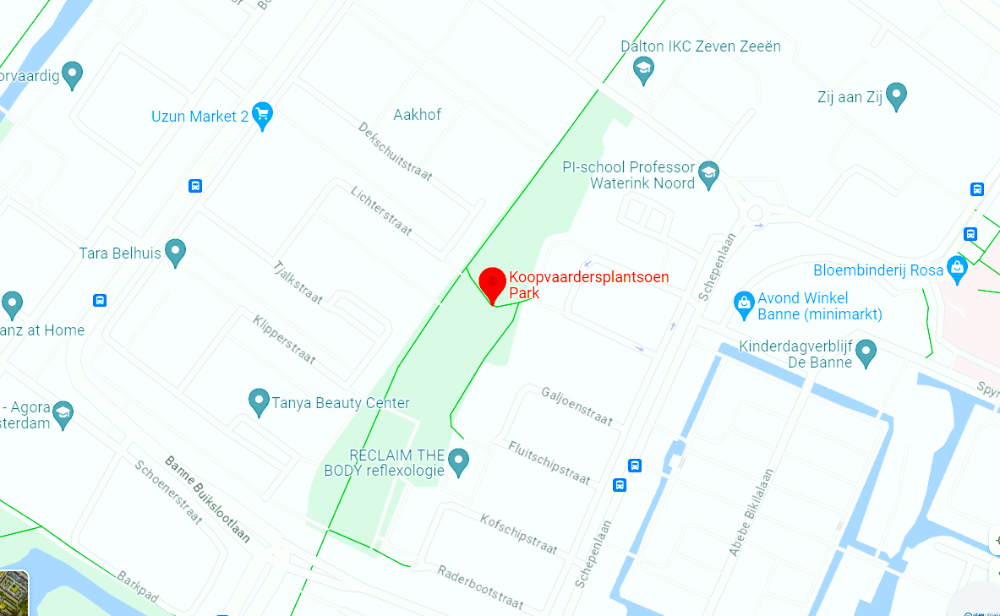
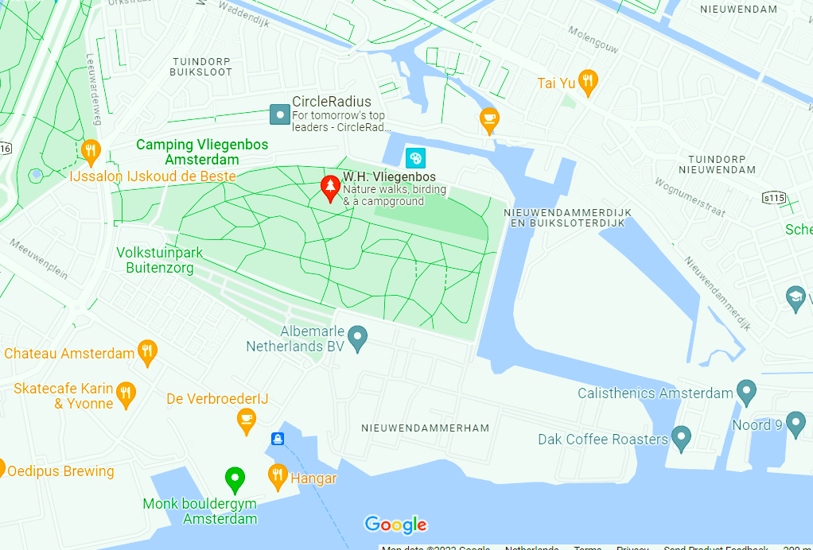

location
Finding your way around a new place can sometimes be a bit tricky, for that reason on this page we provide you with essential information to navigate Amsterdam North Parks and green spaces.
Finding your way around a new place can sometimes be a bit tricky, for that reason on this page we provide you with essential information to navigate Amsterdam North Parks and green spaces.
Address: Floraparkweg 1, 1012 AA Amsterdam. Link: click here for easy directions.
 Address: Koopvaardersplantsoen, 1034 KE AA Amsterdam. Link: click here for easy directions.
Address: W.H. Vliegenbos, 1022 AA Amsterdam. Link: click here for easy directions.